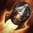
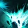
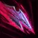
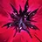
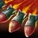
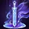
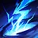
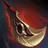

Champions Chips: tier and score per role right now (Emerald+, all regions). Score = win rate points above the role average, corrected for small samples. Arrow = change since 26.21, grey when it is too small to be sure.
Buffs 10 Aurelion Sol buff Copy link Riot says Most players level E second even though it was the weaker choice, so Riot made E stronger to match. So far No clear change. Mid, Global Emerald+: win rate 50.8% → 50.4%, pick rate 1.6% → 1.9%.Means Matters more later in the game, once Aurelion Sol has ranks and items.
Corki buff Copy link Riot says Held back for Worlds. Now Riot gives him room to be stronger for everyone. So far Clearly better. ADC, Global Emerald+: win rate 48.8% → 50.7%, pick rate 2.0% → 4.0%.

R Missile Barrage
Kayle buff Copy link Riot says She faded after the role quest shake-up. The buff is aimed at her early laning. So far No clear change. Top, Global Emerald+: win rate 51.4% → 51.9%, pick rate 2.2% → 2.8%.Means Mostly helps early: Q goes 12s → 10s at rank 1 and stays 8s at max rank.
Maokai buff Copy link Riot says He ended up almost only in support. The buff is meant to help top and jungle Maokai. So far No clear change. Support, Global Emerald+: win rate 50.9% → 51.3%, pick rate 1.6% → 1.9%.Means Only the % max health part changes, so it helps most against tanky targets.

Q Bramble Smash
Naafiri buff Copy link Riot says After earlier nerfs she fell out of mid and is mediocre in jungle. Mainly meant to help mid. So far Clearly better. Jungle, Global Emerald+: win rate 49.8% → 50.3%, pick rate 2.6% → 4.5%.

Q Darkin Daggers

W The Call of the Pack
Bonus attack damage for the pack 20 %→ 22 %
Rumble buff Copy link Riot says He was tuned for pro play. This should help the average Rumble more than pros. So far Clearly better. Top, Global Emerald+: win rate 46.7% → 47.4%, pick rate 1.6% → 1.9%.Means Only the scaling changes (+35% AP → +40% AP), so it helps more the more items Rumble has.

R The Equalizer
Shen buff Copy link Riot says Shen jungle fell too far out of the meta, so his damage to monsters goes up. So far No clear change. Top, Global Emerald+: win rate 51.5% → 51.3%, pick rate 3.7% → 3.6%.Means Mostly helps early: Q goes 100% → 120% at rank 1 and stays 200% at max rank.

Q Twilight Assault
Smolder buff Copy link Riot says Earlier buffs landed softer than planned. Riot also expects the Doran's Bow nerf to help him. So far Clearly better. ADC, Global Emerald+: win rate 50.1% → 51.1%, pick rate 4.0% → 5.1%.Means Mostly helps early: W goes 10 → 25 at rank 1, only 110 → 125 at max rank.
Viktor buff Copy link Riot says Last patch's nerf hit harder than planned. Riot keeps the early game nerf and gives power back later. So far Clearly better. Mid, Global Emerald+: win rate 47.9% → 49.2%, pick rate 6.6% → 7.7%.Means Matters more later in the game, once Viktor has ranks and items. Health: +85 at level 18. Base stats
Health growth 100 /level→ 105 /level

R Arcane Storm
Zaahen buff Copy link Riot says Strong late but with too little to do in lane. This is for his early fights. So far No clear change. Top, Global Emerald+: win rate 50.5% → 50.8%, pick rate 2.8% → 3.5%.Means Mostly helps early: Q goes 10s → 8s at rank 1 and stays 6s at max rank.

Q The Darkin Glaive
Nerfs 3
Locke nerf Copy link Riot says Fine on average, but players who master him are clearly too strong, especially early. So far Clearly worse. Mid, Global Emerald+: win rate 49.5% → 48.3%, pick rate 7.1% → 5.5%.Thresh nerf Copy link Riot says Still at the top of support for the best players, even after the last nerf. So far Clearly worse. Support, Global Emerald+: win rate 51.7% → 51.1%, pick rate 14.9% → 13.8%.Yasuo nerf Copy link Riot says His win rate and ban rate kept climbing as players moved to crit builds, so he gets the nerf Yone got. So far Clearly worse. Mid, Global Emerald+: win rate 50.2% → 48.9%, pick rate 9.0% → 8.0%.Means Only the scaling changes (+105% AD → +100% AD), so it hurts more the more items Yasuo has. Adjusted 1 Mel adjust Copy link Riot says Midscope update: power moves from early game to late game, W destroys missiles and hits back instead of reflecting, Q and R cooldowns drop later on. So far Clearly better. Mid, Global Emerald+: win rate 45.7% → 47.4%, pick rate 1.8% → 1.7%.Means Less health at level 1 but more from level 8, more mana from level 4, shorter R cooldown at ranks 2 and 3. Base stats
Health 640 + 99 /level→ 590 + 107 /level
Mana 480 + 28 /level→ 455 + 38 /level
Armor growth 5.2 /level→ 5.4 /level
Attack damage 54 + 3.3/level→ 52 + 3.3/level
Attack speed growth 2.5 %/level→ 2.75 %/level
Q Radiant Volley
First hit damage Was 60 / 85 / 110 / 135 / 160 (+55 % AP)Now 60 (+25 % AP)
Damage per extra bolt Was 5 / 7 / 9 / 11 / 13 (+5 % AP) Now 5 / 10 / 15 / 20 / 25 (+8 % AP)
Total damage Was 85 - 277 (+80 - 100 % AP) Now 85 - 285 (+65 - 97 % AP)
New 0.5 to 1s cooldown refund (by level) when it hits a champion
Mana cost Was 70 / 75 / 80 / 85 / 90 Now 60 / 65 / 70 / 75 / 80
Missile speed 3800 → 3200
W Rebuttal
Reworked Expanding nova (400 radius over 0.75s) that destroys enemy projectiles and shields and hits back for each projectile it destroys
Hit-back damage 35 / 40 / 45 / 50 / 55 (+10% AP), then 5 / 10 / 15 / 20 / 25 (+5% AP) per later hit, up to 7 per enemy
Shield 80 / 110 / 140 / 170 / 200 (+70% AP) for 2s
Move speed 10 to 30% (by level) for 2s
Mana cost 100 / 80 / 60 / 40 / 0
Cooldown 30 / 28.5 / 27 / 25.5 / 24s
E Solar Snare
Root duration Was 1.5s Now 0.8 to 1.6s at rank 1 up to 1.0 to 2.2s at rank 5, longer the farther it travels
Slow 30% → 20 / 25 / 30 / 35 / 40%
Mana cost Was 50 / 60 / 70 / 80 / 90 Now 40 / 50 / 60 / 70 / 80
Items Who builds it: OP.GG core builds, boots and starting items, Global Emerald+.
Doran's Bow nerf Copy link Riot says Slightly too strong: ADCs that should start Doran's Blade were buying Bow almost every game. Starting item for 22 listed champions (ADC 20, Top 4, Mid 3)
Overlord's Bloodmail adjust Copy link Riot says Meant as a main item for juggernauts, but only Sett really built it. A net buff for most users without pushing Sett much higher. Means More attack damage from the moment you buy it, a bit less extra damage when you are low on health. Core item for 3 listed champions
Everything else No rune, summoner spell, map or ranked changes.
Client TFT moved to its own client on 4 Nov. A button switches between League and TFT, and TFT cosmetics you already own still work in League. That is why this download was bigger than usual. An option to skip TFT downloads comes in a later patch.
New skins 6 K/DA Firestarter Ahri K/DA Firestarter Evelynn K/DA Firestarter Kai'Sa K/DA Firestarter Ignition Akali K/DA Hitmaker Evelynn Prestige Classic Baron Kog'Maw Chromas: Music Fan Gragas (Firestarter), Prestige Classic Baron Kog'Maw (Vivid).
Source: Riot's patch 26.22 notes . Written short in our own words, the numbers are copied as listed. ARAM, Arena, Classic and other modes are left out on purpose.